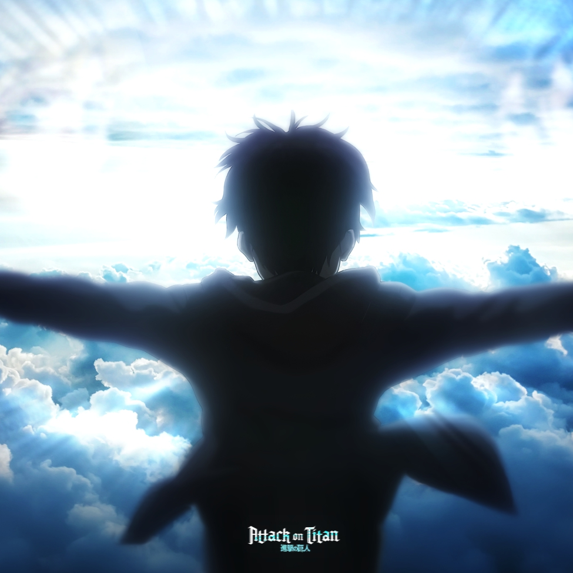

《进击的巨人》是一部由日本漫画家谏山创创作的漫画作品，后来被改编成电视动画、电影、小说和游戏等多种形式。故事设定在一个被巨人侵袭的世界，人类为了生存，建造了三重巨大的城墙来保护自己。然而，随着城墙的破裂，巨人开始入侵，人类面临着前所未有的危机。
故事的主角艾伦·耶格尔自幼目睹母亲被巨人吞食，怀着对巨人无法形容的憎恨和歼灭巨人的决心，誓言加入调查兵团。在调查兵团中，艾伦结识了其他伙伴，他们共同战斗，揭开巨人的秘密，为人类争取自由和生存的权利。
《进击的巨人》以其独特的设定、紧张刺激的剧情和深刻的主题思想赢得了广泛的关注和好评。它不仅是一部动作冒险作品，更是一部探讨人性、生存和自由意义的深刻作品。如果你还没有接触过这部作品，不妨一试，相信你会被它的魅力所吸引。